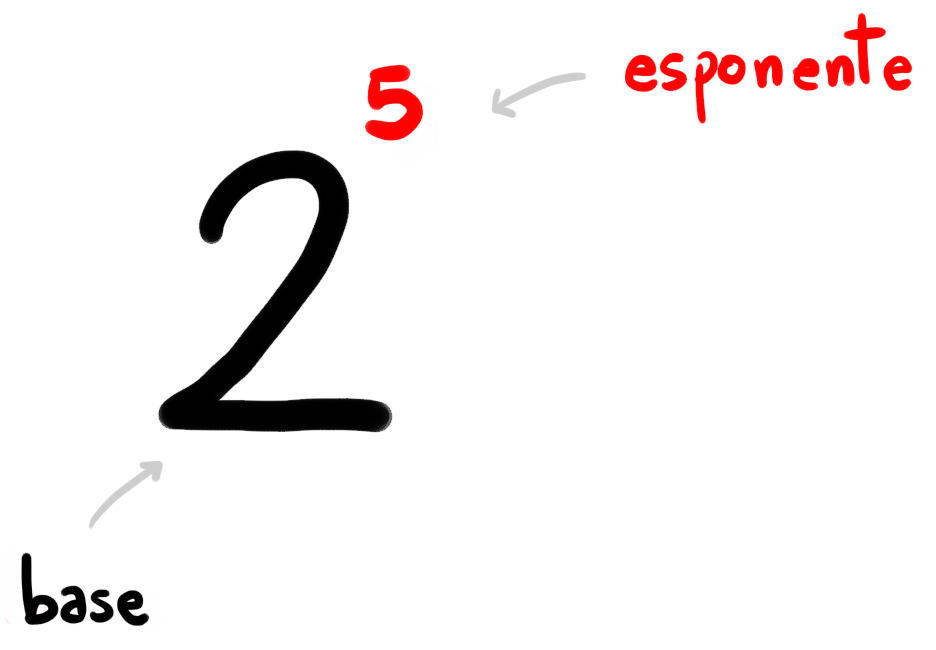

/
/ \[ 5^{\color{red}{6}} = \underset{\color{red}{6}\,\,\color{gray}{\text{volte}}}{\color{gray}{\underbrace{\color{black}{5 \cdot 5 \cdot 5 \cdot 5 \cdot 5 \cdot 5}}}} \]

\[ \left( \frac{\color{#0F9D58}{2}}{\color{blue}{3}} \right)^{\color{red}{\boldsymbol{-}}\color{black}{5}} = \left(\frac{\color{blue}{3}}{\color{#0F9D58}{2}}\right)^{5} \]
\[ \sqrt[\color{blue}{2}]{3^{^{\color{red}{5}}}} = 3^{^\frac{\color{red}{5}}{\color{blue}{2}}} \]
Possiamo riscrivere la radice di un numero come potenza frazionaria di quello stesso numero.
L'indice di radice diventa il denominatore dell'esponente. L'esponente de numero sotto radice diventa il numeratore dell'esponente frazionario.